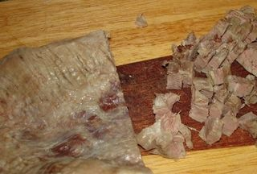
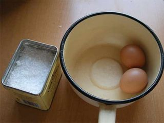
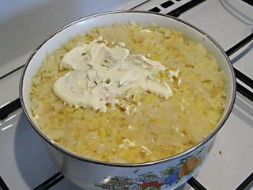

Шаг 1: Подготавливаем ингредиенты.

Для начала хорошо промойте под водой мясо, затем осушите его бумажным кухонным полотенцем, поместите в кастрюлю, залейте холодной водой, немного подсолите и поставьте вариться на сильный огонь. Когда вода закипит, снимите пену и убавьте огонь. Варите до полной готовности мяса. Картофель и морковь также промойте под проточной водой, поместите в отдельную кастрюльку, залейте водой и поставьте вариться на средний огонь. Готовность овощей проверяйте с помощью острого ножа, проткните им картофель в самом толстом месте и если лезвие проходит легко, значит, овощи готовы. Снимите их с огня и остудите, затем очистите от кожуры, удалите все червоточинки и темные пятна на картофеле, если таковые имеются.
Шаг 2: Измельчаем ингредиенты.

Следом отварите куриные яйца, очистите их от скорлупы. Картофель, яйца и морковь натрите на крупной терке. Все измельченные ингредиенты не смешивайте, а разложите в разные емкости. Теперь извлеките из разрезанного пополам граната, зернышки. Пока отставьте их в сторонку. Отварное и остуженное мясо нарежьте на мелкие кусочки. Ядра грецких орехов измельчите не сильно мелко, чтобы они чувствовались в салате. Репчатый лук, очистите от шелухи, ополосните под холодной проточной водой, а затем обдайте его кипятком, чтобы из него ушла и не чувствовалась вся горечь. Затем нарежьте его на мелкие кубики. Сыр натрите на крупной терке.
Шаг 3: Укладываем слои салата.

Дно и бока ёмкости, в которой будете формировать салат, смажьте отфильтрованным растительным маслом, чтобы салат в последствие было легче вынуть из нее. Слои салата укладывайте в следующем порядке: - сыр - яйца - морковь - орехи - мясо - лук - картофель. Каждый слой промазывайте майонезом. Теперь ёмкость с салатом плотно оберните специальной пищевой пленкой и уберите в холодильник, минимум на час.